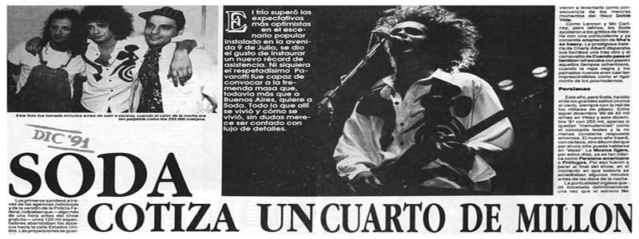

Corría el año 1980, un joven Gustavo Cerati de 21 años, tocaba con un grupo en el cual cantaban dos chicas inglesas, bautizado Sauvage. Cerati estudiaba publicidad en la Universidad del Salvador, era compañero de Hector “Zeta” Bosio, quien lo invitó a zapar con su propio grupo: The Morgan (en el que también estaba Andrés Calamaro en teclados). A comienzos de 1982, Cerati y Bosio soñaban con armar un trío estilo The Police, pero les faltaba el baterista, fue justo cuando Carlos Ficcichia (Charly Alberti), llamó por teléfono a María Laura Cerati para invitarla a salir, atendió su hermano: Gustavo. Entablaron una charla de compromiso y terminaron hablando del padre de Carlos, un famoso baterista de jazz: Tito Alberti (autor de grandes canciones del repertorio infantil como “El Elefante Trompita”, entre otras). A la semana siguiente, Gustavo y Zeta visitaron la casa de Charly, para escucharlo tocar en la batería de su padre. Adoptaron el nombre de “Los Estereotipos” debido a una canción de The Specials que les apasionaba a los tres, lo utilizaron unos meses. Luego surgieron los nombres «Soda» y «Estéreo», dando como resultado SODA STEREO.
Así comenzó un período de constantes presentaciones que los condujeron al Bar Zero (lugar excluyente del under porteño), junto al Café Einstein. En el tercer show, un productor discográfico los escuchó y los llevó a grabar profesionalmente para CBS, hecho que finalmente no se concretó hasta mediados de 1984, con el lanzamiento de su primer disco, llamado simplemente “Soda Stereo”.
Con el segundo disco "Nada Personal" (1985) Soda Stereo demostró que podía lograr más profundidad en las letras y madurez en las melodías. Las encuestas lo dieron como el mejor disco del año y la presentación en Obras Sanitarias, de este material, fue unánimemente calificada como "sorprendente". En 1986 los Soda salieron de gira por Latinoamérica y cosecharon un éxito inesperado. En 1987, en una segunda gira por el continente, la repercusión fue aún mayor. "Signos" fue el primer disco del rock nacional en editarse en formato de compact disc. Dentro de la gira "Signos", hicieron presentaciones en Ecuador y en Uruguay, también en Chile, en la edición número 28 del Festival Internacional de la Canción de Viña del Mar, donde ganaron el premio Antorcha de Plata. El Festival de Viña, transmitido por televisión a muchos países latinoamericanos, expandió la fama de la banda por todo el continente, que no tardó en transformarse en una masiva adhesión incondicional que dio en llamarse Sodamanía. Dos meses después, el 23 de abril, batió récords de público en un recital de rock en Paraguay. Mientras tanto, "Signos" fue disco de platino en Argentina, triple disco de platino en Perú y doble platino en Chile. El 2 de mayo de 1987 se presentaron en la discoteca Highland Road de San Nicolás (Buenos Aires), cuando sucedió un derrumbe en el que murieron cinco jóvenes y hubo más 100 heridos mientras estaban tocando "Persiana americana". Con una carga emocional muy fuerte tocaron en Obras el 8 y 9 de mayo para presentar "Signos" en Buenos Aires. Como expresión de duelo el grupo no utilizó la escenografía ni los juegos de iluminación que tenían preparados. El retorno al disco de estudio fue con "Doble vida" (1988), primer álbum grabado íntegramente fuera del país, logró un sonido más tecnificado del trío y sobresalieron dos hits: "Lo que sangra (La cúpula)" y "En la ciudad de la furia" (originalmente, ése iba a ser el título de la placa). Para coronar un gran año, cerraron el Festival por la Democracia en Buenos Aires ante 150 mil personas. A principios de 1990 la banda se presentó en el estadio de Vélez junto al dúo inglés Tears For Fears en un show ante 32 mil personas. El éxito continental llevó a la cadena europea MTV News a prestar atención a lo que estaba sucediendo en América Latina con el rock en español, dedicándole un programa especial al grupo, hecho sin antecedentes para un grupo de rock de habla no inglesa.
En junio de 1990, Soda Stereo viajó a Estados Unidos para registrar una nueva placa en los Estudios Criteria de Miami. El resultado fue el álbum "Canción animal", considerado generalizadamente como uno de los mejores de la historia del rock latino. Allí se editó la canción más popular: "De música ligera", además de otros clásicos de la banda como "Canción animal", "Un millón de años luz", "El séptimo día" y "Té para tres". Aquel nuevo álbum significó para la banda el acceso al público español, que se plasmó en mayo de 1992 con presentaciones en las ciudades de Madrid, Oviedo, Sevilla, Valencia y Barcelona. En materia de público, el máximo registrado en una sola presentación fue el 14 de diciembre de 1991, con 250 mil personas en la 9 de Julio, en el show gratuito "Mi Buenos Aires Querido". En noviembre de 1992 los Soda fueron protagonistas de un hecho inédito en la Argentina: la transmisión de TV en estéreo con la presentación del "Dynamo" (1992) que tocaron casi todo el álbum en el programa "Fax", de Nicolás Repetto por Canal 13. En diciembre llegaron los ocho shows en el estadio Obras, también destacados por la puesta en escena. "Dynamo" no vendió como se esperaba, porque en aquellos días, el grupo cambió de compañía discográfica: Sony no tenía intenciones de apoyar un grupo que emigraba y BMG no podía incentivar un producto de otra empresa.
El '94 fue el peor año de Soda: por decisión unánime, tomaron distancia del mito y evaluaron la posibilidad de separarse definitivamente. Cerati ya había encarado proyectos solistas ("Colores santos", con Melero, y "Amor amarillo"), Zeta se dedicó a la producción de otras bandas (Peligrosos Gorriones, Aguirre) y Charly desapareció de la música para incorporarse al jet-set de las revistas.
Luego de tres años de silencio discográfico (se editaron dos recopilaciones en 1994: "Zona de promesas", álbum de remixes, y "20 grandes éxitos"), el trío volvió en 1995 con "Sueño Stereo". Los recitales de Agosto demostraron que mantenían la vigencia de años anteriores, razón por la cual fueron invitados a participar del 113º aniversario de la Ciudad de La Plata, en noviembre, ocasión para la cual reunieron 200 mil personas en la Plaza Moreno, con Julio y Marcelo Moura (exVirus) como invitados. A mediados de 1996 fueron invitados por la cadena MTV para sus famosas sesiones unplugged (desenchufadas) en Miami. Luego de rechazar la invitación varias veces, Soda Stereo logró que la cadena aceptara su propuesta de tocar con sus instrumentos eléctricos y enchufados, aunque reorquestando y modificando las versiones clásicas para hacerlas más lentas y musicalmente más complejas, Esta presentación fue registrada parcialmente en la placa "Confort y música para volar" (1996) y de manera completa en una nueva versión del álbum editado en 2007. El álbum incluyó además cuatro temas nuevos que habían quedado fuera de "Sueño Stereo" y un track interactivo con historietas e imágenes en video de la presentación en MTV.
Un largo silencio antecedió a la despedida final. Gustavo Cerati participó en un álbum tributo a Queen pero, finalmente, Soda Stereo anunció su disolución a mediados de 1997. Lo hicieron con una gira a la que llamaron "Chau Soda", pasando por México, Venezuela y Chile, antes de cerrar con dos shows en el estadio de River Plate, en septiembre. Durante el tour se grabaron versiones en vivo, que serían editadas en dos discos separados, bajo el nombre de "El último concierto A" y "B". Los motivos que llevaron a la separación fueron las desavenencias en lo referente a los criterios musicales que la banda estaba teniendo últimamente.
En diez años de separación, varias fueron las oportunidades en las cuales se rumoreó un reencuentro. Sin embargo, sólo se concretó para finales de 2007: la banda anunció cinco shows en River Plate y luego una gira por las principales capitales de Latinoamérica llamada “Me verás volver” pero, aclararon que en 2008 cada uno continuaría con sus proyectos independientes: Gustavo con su carrera solista, Zeta al mando de su empresa Alerta Discos y Charly con Mole, su proyecto musical.
En la madrugada del Domingo 16 de Mayo de 2010, Gustavo Cerati sufrió un ACV (accidente cerebrovascular), tras presentarse en un concierto en Caracas, Venezuela, cuya gira tuvo el mismo nombre que su último disco solista ("Fuerza natural"). Fue trasladado a la Argentina donde permaneció en coma durante 4 años, finalmente, el 4 de Septiembre de 2014 muere. Luego, Cirque du Soleil hizo un espectáculo temático con Soda Stereo titulado Sép7imo Día, presentado entre 2017 y 2018. Para realizarlo, Zeta y Charly volvieron a juntarse para producir la parte de sonido, escuchando los masters de las canciones. Esto los llevó a que empezaran a pensar en volver a tocar juntos.
Gracias Totales - Soda Stereo fue anunciada por la banda a través de un vídeo y una carta a sus seguidores en sus redes sociales. Comenzó el 29 de febrero de 2020 en Bogotá, Colombia, para seguir con fechas en Argentina, Perú, Chile, México, Paraguay, Estados Unidos, varios países de América Central, etc. Junto al anuncio, se reveló que los músicos sobrevivientes, Zeta Bosio y Charly Alberti, serían acompañados por diversos cantantes tanto en vivo como a través de videos pregrabados, entre los que se menciona a Chris Martin de Coldplay, Adrián Dárgelos de Babasónicos, Rubén Albarrán de Café Tacvba, Mon Laferte y el hijo del vocalista original de Soda Stereo Benito Cerati. Dicha gira fue suspendida momentáneamente debido a la pandemia mundial generada por el Coronavirus.
